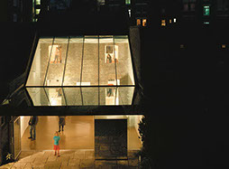

Artist Studio
62 Rochester Place, in London NW1, completed in 2004, received an RIBA Award in 2005 and has been one of the most visited private projects in London’s annual Open House event ever since. The client’s acquisition of the mews workshop at the end of their garden provided the opportunity to both reinstate and reconfigure the relations that organise a typical slice of Victorian urbanism and its constituent parts: terrace, house, garden, workshop, mews. Restoration and extension of the original workshop building was driven by a desire to establish an ambiguity between the real and the visual (or perceived spatial) sequence of parts, allowing the possibility that from certain key points of view it appears to be reshuffled, as soffit becomes garden, intimate interior spaces are projected out onto the lawn and fascia becomes the house you thought you’d left behind. These optical ends are deployed to set up a dense meshing of reflective and reflexive views between the client’s house and studio across the pleasure zone of the garden. While the primary programme is for display and archival operations, a secondary (and conflicting) programme is interwoven that covertly extends the corporeal aspects of the garden. Two strategies of concealment are at work that enable spaces for steam and sauna to be simultaneously present. A sauna sits in another mirror clad box that hovers between roof and the flagstones beneath, stranded somewhere between inside and out. While a steam room can be glimpsed in an amorphous vessel that recalls the ancient bulks that figure so prominently in the client’s landscape paintings. While the display spaces present their public face to the mews, the rear, after dark, becomes a giant curiosity cabinet in which large paintings can be viewed, lit up at the end of the garden, from the domestic comfort of the house. Structural Engineer: Matthew Wells, Techniker Ltd
